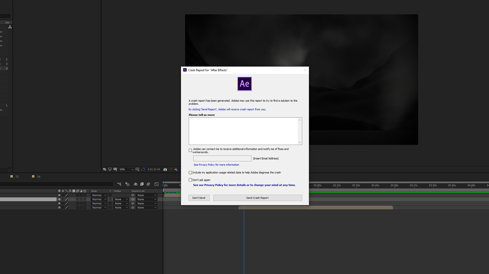

Sorprendentemente Blender 2.80 si è rivelato un programma stabile anche se in versione Beta, tantè che ho avuto più crash da parte di After Effects, usato per la post produzione e compositing.
Le difficolta maggiori sono state legate principalmente alla mia incompetenza con Blender, in campo di Shader che mi hanno portato ad eliminare la maschera del "lumacone spaziale" percé veramente poco realistica.
Secondariamente un problema che mi aspettavo ma che avevo sottovalutato sono i tempi di render. Infatti sapevo che per renderizzare 10 secondi di animazione ci si potesse mettere più di un ora, ma quello che non avevo considerato l'imprecisione delle tempistiche della preview, che più volte mi ha forviato facendomi sbagliare tempismi d'animazioni, dovendo successivamente rifare il render di un intera scena.
Infine devo ammettere che molte cose non sarei mai stato in grado di realizzarle senza diversi tutorial dei seguenti canali Youtube:
Curtis Holt : https://www.youtube.com/channel/UCzghqpGuEmk4YdVewxA79GA
Baptiste G : https://www.youtube.com/channel/UCXuVzfh9nCdjGVP7XMAFT4Q
JonasDichelle : https://www.youtube.com/channel/UCU_SZNduThWo-em6lRcOgzQ
Blender Guru : https://www.youtube.com/channel/UCOKHwx1VCdgnxwbjyb9Iu1g
CGMatter : https://www.youtube.com/channel/UCy1f4m64dwCwk8CBZ_vHfPg